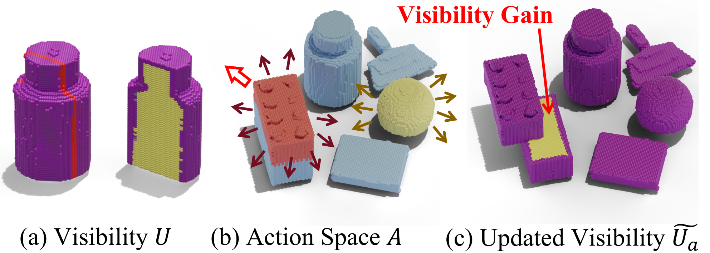
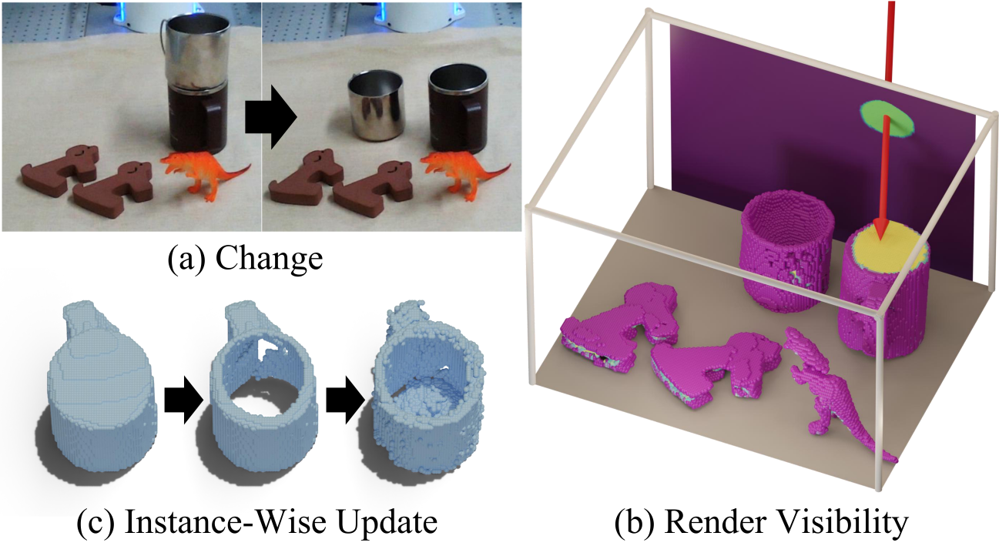
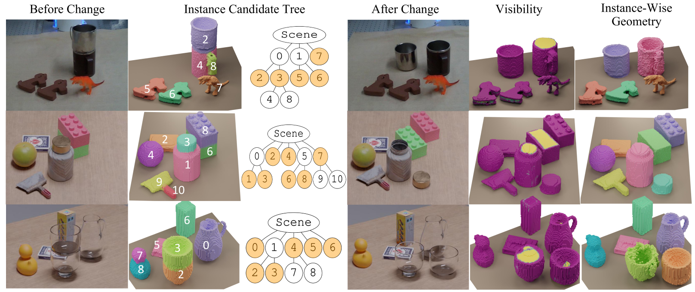
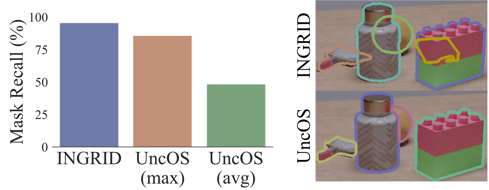

Identifying object instances and reconstructing their geometry are fundamental to manipulation, yet passive observation of a static scene is bounded by occlusion — which breeds both geometric and semantic ambiguity in cluttered, multi-object settings. INGRID lets a manipulator interact with the scene to reveal hidden surfaces and separate ambiguous instances. The first challenge is deciding where to interact to induce the most informative change; the second is efficiently updating instances and geometry once new views arrive. INGRID answers both with a four-step pipeline, and proves robust in severely occluded scenes both in simulation and the real world.
Occlusion creates two kinds of ambiguity a camera alone can't resolve.
When surfaces are hidden, the scene supports more than one explanation. INGRID's answer is to change the scene, not just look harder at it.
Hollow, or solid?
Two cups stacked vertically: the lower cup is occluded. From images alone there is no way to tell whether its interior is hollow or filled in.
One block, or two?
A block that is actually two separable pieces shares near-identical semantic features across the seam — so passive segmentation cannot decide whether it is one instance or two.
Four steps, from a hierarchy of guesses to instance-wise geometry.
Building on normal, density, and three-level feature fields, INGRID decides where to push, executes the action, then re-identifies and refines only what changed.
Instance candidate tree
Cluster the coarse/mid/fine affinity fields with HDBSCAN, then build a tree where each node is a candidate point cloud and every child is a subset of its parent. The action space lives on the leaf nodes.
Optimize an informative action
A 3D visibility field U records how well each voxel was seen during training. Over every leaf node × 12 directions × 20 magnitudes (1–40 cm), pick the push that maximizes newly-revealed surface area: arg max Q(a).
Identify instances under rigid-body assumption
After the push, jointly solve for the set of instances and their SE(3) transforms against sparse new views, minimizing 2D Chamfer distance. Start coarse; split nodes and re-solve until alignment error drops below threshold.
Selective geometric finetuning
Cut-and-paste high-visibility regions to a strong starting point, then finetune only the instances that still hold low-visibility surface — efficient, and more robust in the few-shot regime than finetuning from scratch.


Accurate geometry and cleaner instances, in seconds rather than minutes.
Evaluated on a photo-realistic Blender dataset for ground truth and on a Franka Panda real-world setup. Lower VSD is better; higher IoU and precision/recall are better.

| Model | VSD · 2 | VSD · 4 | VSD · 8 | VSD · 16 | IoU · 2 | IoU · 4 | IoU · 8 | IoU · 16 | Runtime |
|---|---|---|---|---|---|---|---|---|---|
| INGRID (Update + Finetune + Visibility) | 0.0385 | 0.0330 | 0.0307 | 0.0302 | 0.8672 | 0.8973 | 0.9132 | 0.9142 | 17 sec |
| INGRID (Update + Finetune) | 0.0465 | 0.0413 | 0.0387 | 0.0383 | 0.8673 | 0.8967 | 0.9131 | 0.9134 | 17 sec |
| INGRID (Update) | 0.0433 | 0.0416 | 0.0407 | 0.0406 | 0.8771 | 0.8875 | 0.8937 | 0.8921 | 3 sec |
| INGRID (Scratch) | 0.1842 | 0.0427 | 0.0343 | 0.0333 | 0.5155 | 0.8894 | 0.9550 | 0.9578 | 62 sec |
| Dex-NeRF (Update) | 3.0190 | 2.6412 | 0.0934 | 0.0506 | 0.0769 | 0.8053 | 0.9353 | 0.9461 | 25 min |
| Dex-NeRF (Scratch) | 2.7979 | 2.6319 | 0.0992 | 0.0535 | 0.0695 | 0.4382 | 0.9351 | 0.9453 | 50 min |
| NeRF (Update) | 0.8672 | 1.0712 | 0.1003 | 0.0687 | 0.0769 | 0.8053 | 0.9353 | 0.9461 | 25 min |
| NeRF (Scratch) | 1.7426 | 0.9968 | 0.0881 | 0.0716 | 0.0695 | 0.4382 | 0.9351 | 0.9453 | 50 min |
| Instant-NGP (Update) | 0.7123 | 1.1015 | 0.3884 | 0.0981 | 0.5807 | 0.7565 | 0.8472 | 0.8617 | 25 sec |
| Instant-NGP (Scratch) | 0.3973 | 0.4515 | 0.3791 | 0.0900 | 0.1617 | 0.4455 | 0.7821 | 0.8665 | 50 sec |
With only 2 images, INGRID transforms objects in 3D and finetunes newly-visible parts in 17 seconds — where field-based baselines take minutes.
| Model | Precision ↑ | Recall ↑ |
|---|---|---|
| INGRID | 0.7449 | 0.7002 |
| INGRID (coarse) | 0.5707 | 0.6403 |
| INGRID (mid) | 0.6393 | 0.6816 |
| INGRID (fine) | 0.6226 | 0.5500 |
| Garfield (0.00) | 0.5652 | 0.4218 |
| Garfield (0.05) | 0.5268 | 0.4026 |
| Garfield (0.10) | 0.4562 | 0.4361 |
| Garfield (0.15) | 0.3055 | 0.3107 |
| OmniSeg3D | 0.5033 | 0.5567 |

What INGRID adds.
An interaction algorithm that autonomously induces change to expose occluded objects.
An efficient instance-wise geometric finetuning scheme driven by a visibility metric.
An optimization that jointly recovers instances and their transforms from a few images after change.
Honest edges.
INGRID reliably reconstructs instances and geometry in occlusion-prone scenes — with room to grow.
Fixed candidate tree. True instances must appear in the initially built tree; dynamic node splitting or merging could add flexibility.
Needs viewpoint coverage. Fully unobservable regions — e.g. items on a shelf — remain hard; shape priors like symmetry or superquadrics could help.
Rigid-body assumption. Deformable objects like cloth or dolls fall outside scope; a piecewise-rigid model is a promising extension.
BibTeX
Placeholder entry — replace with the final venue and author list once de-anonymized.
@inproceedings{ingrid_anon,
title = {INGRID: Interactive Geometry and Instance
Identification for Occluded Scenes},
author = {Anonymous},
booktitle = {Under Review},
note = {Paper ID 24},
year = {2025}
}